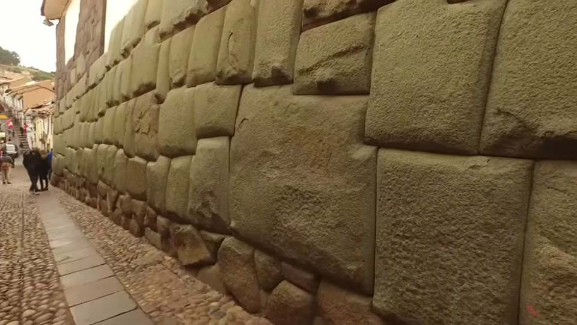
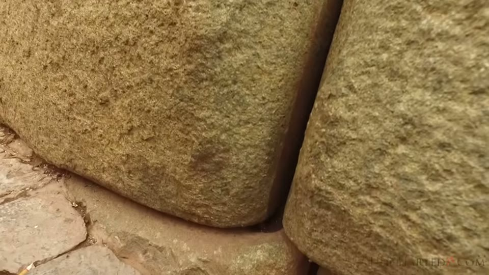
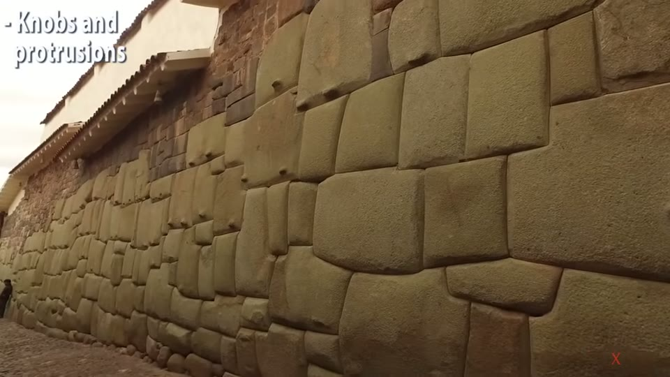
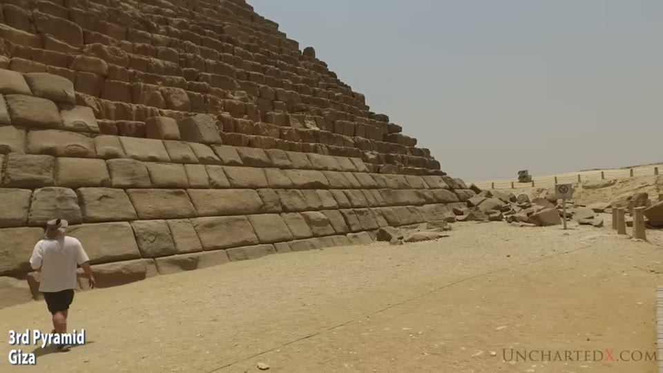
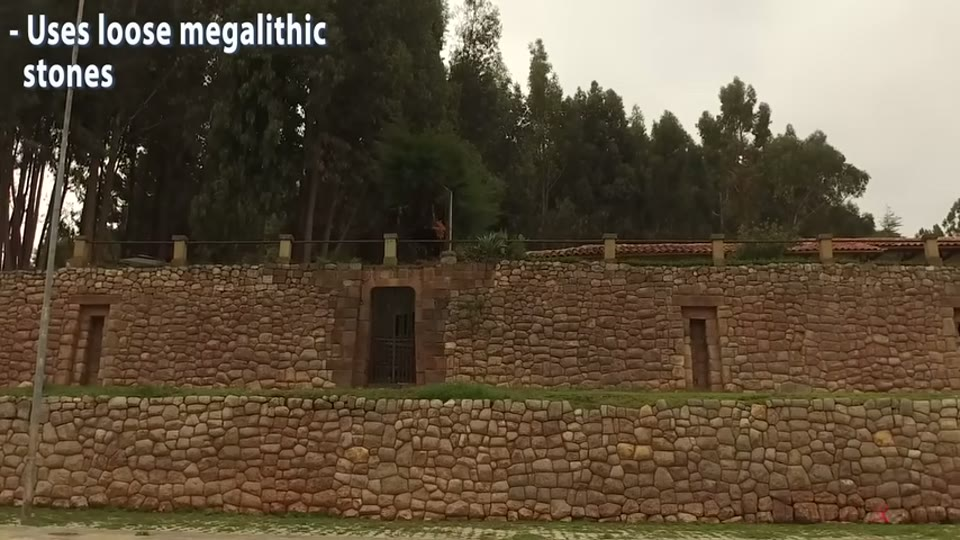

UnchartedX
Why the Megalithic Andean Architecture in Peru and the Sacred Valley is older than the INCA!
Ben · 32 min · watch on YouTube · summarised 2026-09-30
This is the classification video. Two later UnchartedX entries — Sacsayhuamán and Machu Picchu part two — run their whole arguments on the three-style scheme and both refer the viewer here for it. Ben does the same inside this one, calling it a system that "once you start looking at these sites… it's one of those things that you can't unsee."
It is early work for the channel — January 2019 — and it is a survey rather than an investigation of one site.
Why the record is so thin
Ben opens on an asymmetry 01:34–03:26. We know more about Egypt, Greece and Rome than about South America, even though European contact with the Americas is far more recent, because those civilisations left written records and overlapped one another, so accounts can be cross-checked. Peru has none of that.
His account of why is blunt and angry. Within a few decades of Columbus the Spanish had "effectively stolen or destroyed damn near everything", killed a large part of the population, and deliberately destroyed the artefacts, records and writings that might have carried the region's history — done, he says, "in the name of religious zealotry", with the Church "cheering them on". He returns to it at the close, calling the loss "a tremendous loss for our entire species".
What survives: oral traditions and legends he says are mostly ignored by academics, accounts from a few Spanish writers, very few relics, and the stonework.
The Inca, and what the Inca said
The dates Ben gives 05:55–06:46: a first dynasty founded around 1100 AD, real prominence only from the 1400s, and the last stronghold destroyed by the Spanish in 1572 — roughly 150 years at the top. Precursors he names are the Tiwanaku people, whose own site he says is dated incorrectly and promises a video on, which he later made and which is held here as the Tiahuanaco entry.
Then the part he treats as evidence 06:46–07:46: "the Inca themselves don't claim to have built these megalithic sites." Asked who made the walls at Sacsayhuamán, they answered that it was their gods — the giants of their past — who raised it overnight.
He adds a qualification to that in his own voice, before anyone else can: "when I say giants, I don't believe that giants always means literal giants. Giants can mean giants of intellect, giants of capability… it can indicate a reverence for an older culture."
The wider tradition he points to is the shared memory of catastrophe — the Aztec Ages of the Sun among them — which he says is "quite hard to find exceptions for" across ancient cultures, and which he connects to the Younger Dryas 08:15–10:03: a period he dates to roughly 12,900 to 11,600 years ago inside a wider window of 15,000 to 10,000, bracketed by two abrupt global climate reversals and, on the research he cites, caused by cosmic impact. He names the Comet Research Group, Randall Carlson and Antonio Zamora, mentions a crater found under the Greenland ice "in recent weeks", and the Burckle crater of around 5,000 years ago which he says was "likely responsible for causing the biblical flood".
Gamarra, and what Ben takes from him
Jesús Gamarra and his father Alfredo have lived and worked in Cusco for more than seventy years between them 10:59–12:22. Ben met Jesús twice, in 2013 on a tour with Graham Hancock and Brien Foerster, and again in 2015 in a café near the Coricancha. Their books are in Spanish; there is an English-language DVD, The Cosmogony of the Three Worlds.
The separation Ben makes is the reason this entry is worth having:
"Now his books and his theories you might describe as being out there, in particular the theories and proposals around gravity. But what I do think is extremely solid and very well researched and put together is the system that he uses for identification and categorization of the obvious three different styles of masonry."
He takes the classification and declines the rest, and says so in the same breath — the same move he makes again eight months later in the Sacsayhuamán video.

The researcher whose three-style classification the video adopts.
Hanan Pacha — the oldest
12:37–17:35. Characteristics as Ben gives them:
- monolithic — one piece, often massive, formed out of the living rock, as if the mountain itself had been shaped
- generally the bottom layer at a site, and its core
- often very hard stone. At Ñaupa Huaca in the Sacred Valley he says the work is in "blue stone, which is a form of granite"
- heavily eroded and weathered, and on his description visibly older than what sits on it
- vitrified surfaces — shiny, light-reflecting, as if heat-treated. He credits the term's current use to Robert Schoch and lists possible causes as unknown: solar flares, lightning, cosmic impact, airburst, or an unknown chemical process. The editor captions a shot "- Vitrified Stone", though the surface in it is in shadow and no shine is resolvable
- an appearance of having flowed — "almost as if it was molten, or like toffee" — with shapes that look pressed in. Gamarra demonstrates the comparison by pressing hard objects into clay or putty
- a connection with water: long intricate channels cut through rock, with good examples in the hills around Cusco
- revered by the later styles, often surrounded or enclosed by them — what he calls "circular protection", "almost a gentle touch"
He extends it beyond Peru: the Subterranean Chamber of the Great Pyramid at Giza is his best example elsewhere — he shows his own phone footage from 2015 — and he adds the foundation stone and Well of Souls under the Temple Mount in Jerusalem.
The last characteristic is destruction. Great areas of this work are split apart, and there are "staircases that have been turned upside down." His example is the Lazy Stone, which sits outside the boundary of Sacsayhuamán — carved, split, moved, with inverted stairs on it, and, by Inca legend, once the gateway to a tunnel system running through the hills and down into Cusco. He mentions being shouted at for filming it.

That the oldest style shows massive destruction — split, moved, and with its cut steps disordered.
Uran Pacha — the megalithic style
17:35–23:10. This is the style most people picture.
- cellular, many blocks rather than one piece, and in any one construction almost always a single type of stone — "the builders went to extreme lengths in some cases to always make walls and constructions from a single type of stone"
- non-linear and non-uniform: no two blocks the same shape or size, effectively no straight lines, yet fitted so closely "you can't fit a piece of paper in between them"
- where walls in the streets of Cusco have come apart, the mating surfaces inside are visible, and Ben says they are flat, precise, and carry lips along their edges. What is on screen while he says it is the outside of a joint between two blocks, filmed very close
- corners are carved into single stones rather than formed at a joint, so the wall has no continuous vertical fault line — which he gives as the reason the work is called earthquake-proof
- vitrified surfaces appear here too
- knobs and protrusions, which he says are "clearly not for lifting the stones — they're never in the centre of gravity… if you try to put a rope under them, the stone would flip over". He compares them to the casing stones on Menkaure's pyramid at Giza
- usually the middle layer, sitting on Hanan Pacha and sometimes enclosing it
- frequently quarried and reused, turning up as lintels or patches in later Inca walls


The precision of the megalithic style: no two blocks alike, and joints with no visible gap.


The projecting knobs, and the same feature on another continent.
On how it was made, Ben does not claim to know, and says so twice: "I don't know the process that formed these walls. It doesn't make any sense to me." What he offers instead is marked as the best he can do:
"The closest thing I can come to — and having talked to a lot of people around the world on this — is that it's almost as if these stones were somehow, their consistency was changed to something like toffee, and then they were pushed into place in gaps between other stones that were set, and then they set in place."
That idea is argued in full, as a casting hypothesis with laboratory analysis behind it, in the Sacsayhuamán casting entry on another channel. In his own later Sacsayhuamán video Ben gives three manufacturing objections to that hypothesis; here, eight months earlier, softened stone is the nearest thing he has to an explanation. Both are recorded.
He also lists sites he says share the pattern: Egypt, Easter Island, Lebanon and Baalbek, and the Hypogeum in Malta.
Garcilaso on Sacsayhuamán
The video's longest quotation 23:10–24:21, from the chronicler Garcilaso de la Vega:
"This fortress surpasses the constructions known as the seven wonders of the world. For in the case of a long broad wall like that of Babylon, or the Colossus of Rhodes, or the pyramids of Egypt… one can see clearly how they were executed… They overcame all difficulties by employing human effort over a long period. But it is indeed beyond the power of imagination to understand how these Indians, unacquainted with devices, engines and implements, could have cut, dressed, raised and lowered great rocks more like lumps of hills than building stones, and set them so exactly in their places. For this reason, and because the Indians were so familiar with demons, the work is attributed to enchantment."
The specialisation argument
24:21–25:49. Ben's own reasoning, offered as reasoning rather than evidence. Reaching that level of stonework takes a long apprenticeship — "you have to spend a lot of time being really crap at being a stone carver" — which in turn needs a large population, organised agriculture, schools and guilds to support people who are not producing food. His analogy is a modern car tyre and the specialisation behind it. He adds that high altitude limits how large a population can be fed, and sets the Inca's few hundred years against the thousands available to dynastic Egypt.
His examples of the precision are the Twelve Angled Stone in a Cusco street, and the tiny interface stones, lips and edges on the Coricancha walls.
Ukun Pacha — the Inca work
27:26–29:53. The third style, "or the third world":
- rough, small stones stacked without much order, often with mud mortar
- no vitrified surfaces
- made of whatever stone was to hand, including the remains of megalithic work — though Ben is careful here: "it certainly seems like the Inca did not take apart any megalithic walls, they were very quick to use any of these stones that were laying about"
- always the top or latest layer, and typically used to repair the other two
- very prolific: all the Inca terracing across the Sacred Valley
And then the observation that complicates his own scheme, which he offers rather than avoids: this style also shows reverence for the earlier work. At Machu Picchu, Inca-style walls "mimic quite closely some of the much more precise megalithic work". At Ñaupa Huaca a single-piece carved portal and finished wall stands opposite a wall of loose work that he reads as homage to it — the site he gives a whole video to five months later, in the granite cave entry, which opens by recommending this video as the introduction to it.

The third style: rough stonework reusing whatever was to hand.
His conclusion from the pair is a question: "It does beg the question — if it was one civilisation that was capable of making one of those walls, why wouldn't they make that type of wall everywhere? They're clearly capable of it."
Where he lands, and an argument he had
Three things in the closing 29:53–31:27:
He is explicit about what the argument is not. "None of this is taking anything away from the Inca. Their civilisation was vast, it achieved much, and it is to be respected. It's truly a heritage to be proud of."
He recounts a disagreement. A Peruvian guide and author — Ben gives the name as Mallku Aribalo — insisted the Inca built everything in Peru, all three styles, and that it was "an organic style" that put very poor stonework next to colossal megalithic work. Ben says that when he raised inconsistencies he was accused of believing aliens built everything and of being a conspiracy theorist, "as if I had somehow insulted his heritage just by asking some questions."
He states his claim at its narrowest. "I don't claim to have all the answers, but I do believe that there is more here than can be explained by the mainstream story. There are obvious different types of construction on these sites. There's obvious erosion and age differences in the materials and clearly vastly different levels of technology have been employed."
What you can check yourself
- Whether three distinct qualities of work are present at these sites, and whether they layer in the order described — the whole classification is a claim about what is visible, and any visitor or photograph can be put to it.
- The mating surfaces inside fallen walls in Cusco, and whether they carry the lips Ben describes.
- Whether corners are cut into single blocks rather than formed at a joint.
- The Twelve Angled Stone, in a Cusco street and photographed constantly.
- The Garcilaso passage, which is a published 16th-century source.
- Whether knobs sit off the centre of gravity — a claim about position that a photograph and a straight edge can be put to.
- Gamarra's own published work, named here in Spanish and as an English DVD, against the classification as Ben presents it.
- The Subterranean Chamber at Giza, offered as the same style on another continent.
What the video does not settle
- Nothing here is dated. Despite the title, no radiocarbon, luminescence, erosion rate or stratigraphic date appears. The case for the megalithic work being older is made from style, layering order, the level of technology Ben reads into it, and the Inca's own accounts.
- Vitrification is asserted and not tested. No sample, no analysis, no measurement, and the cause is given as unknown with five candidates listed. The claim that a surface is heat-treated rather than polished or naturally glazed is not examined. The one frame the editor labels "Vitrified Stone" is a dim interior in which no reflective surface can be made out.
- The lips on the mating surfaces are described but not filmed. The passage about the inside faces of fallen blocks runs over a macro shot of the outside of a joint. No interior mating surface, and no lip, appears in the video.
- The Twelve Angled Stone is named but not isolated. The footage over it is a raking view along the street wall in which the individual block cannot be traced, so the twelve sides cannot be counted from what is shown.
- The softened-stone idea is Ben's own and he marks it as a guess, twice saying he does not know the process. No test, material, or worked example accompanies it.
- "Always the same type of stone in one construction" is a survey claim with no survey. No count of sites or constructions is given.
- "Knobs are never in the centre of gravity" is not demonstrated. No block is measured, no centre of mass is worked out, and no counter-example is looked for.
- The Inca statement about gods and giants has no source. No chronicler, date or text is named for the exchange at Sacsayhuamán.
- The Younger Dryas material is cited by name, not by paper. The Comet Research Group, Randall Carlson and Antonio Zamora are named; no study, author or date is. The Greenland crater is "found in recent weeks" with no paper, and the Burckle crater is tied to the biblical flood with no source at all.
- The specialisation argument is an analogy. It reasons from modern manufacturing and general principles about craft, not from anything found in Peru.
- The dispute with the guide is reported from one side. The other party is not quoted directly and the exchange is not dated or located.
- A date is misspoken. Ben says the Inca rose to prominence in "the early parts of the 13th century, so the 1400s" — the century and the years do not match, and the figure he uses throughout is the 1400s.
- The precursor cultures are mentioned in passing. The Wari are named once as the kind of earlier culture whose artefacts turn up at these sites, and nothing further is said about what that implies for the layering.
- Both other styles are said to revere Hanan Pacha, and the same is said of Ukun Pacha toward Uran Pacha. The video reports that the reverence runs down all three layers without saying what distinguishes reverence from ordinary reuse.
Names
The caption track on this upload is punctuated, which is unusual for the channel's 2019 videos, but the proper nouns are still mangled. Reconstructions flagged:
| written here | as the captions give it |
|---|---|
| Cusco | "Kusco", "Kusko" |
| Sacsayhuamán | "Saxi Huaman", "Sax Wan", "Saxaman" |
| Ollantaytambo | "Atlante Tambbo" |
| Coricancha | "Coranchanter", "corancha" |
| Ñaupa Huaca | "Napahaka", "Napaka" |
| Q'enqo | "Kko" |
| Sillustani, Lake Titicaca | "Silastani", "Lake Titikaka" |
| chullpa towers | "chula towers" |
| Hanan Pacha, Uran Pacha, Ukun Pacha | "Han Patcha" / "hunen patcher", "urin patcha", "uken patcha" |
| Garcilaso de la Vega | "Gastilaso Dega", "Gasilaso Dega" |
| Viracocha | "Viraosha", "Whirosha" |
| Graham Hancock | "Graeme Hancock" |
| Brien Foerster | "Brian Forester" |
| Menkaure | "manara" |
| Wari | "the Wii" |
| Mallku Aribalo | "Malcu Arabaldu" |
| Robert Schoch | "Robert Shock" |
| Bølling–Allerød | "Bowling Allerd" |
Mallku Aribalo is the least certain of these and is reconstructed from the audio description — a Peruvian guide and author — rather than from anything on screen.
The Lazy Stone is not a reconstruction: it is the channel's own name for the feature and appears written in the video's chapter titles. Whether it is also known by another name locally is not said.
Two spellings came off the screen rather than the audio. The park sign behind Gamarra reads "Parque Arqueológico SAQSAYWAMAN — Ley Nº 28296", which is a fifth spelling of that site name across this corpus. And the editor's own on-screen labels carry "Vitrified Stone", "Knobs and protrusions", "Uses loose megalithic stones", "Mimics megalithic work" and "3rd Pyramid Giza" — those are the presenter's captions, not the narration, and several of the image rows below exist because of them.